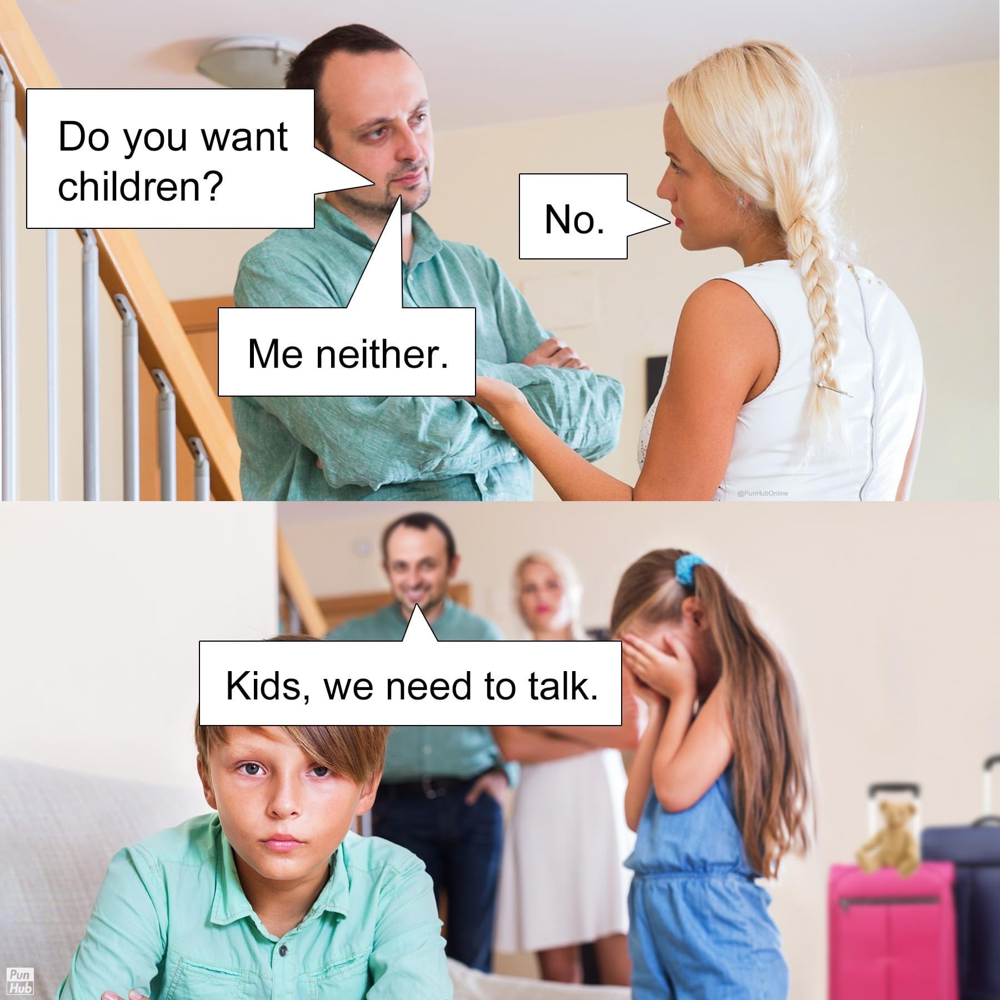
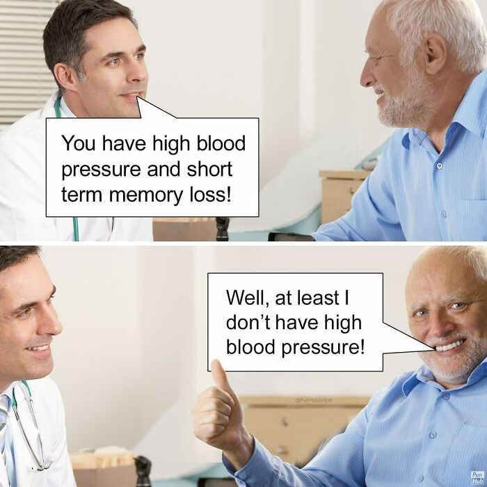
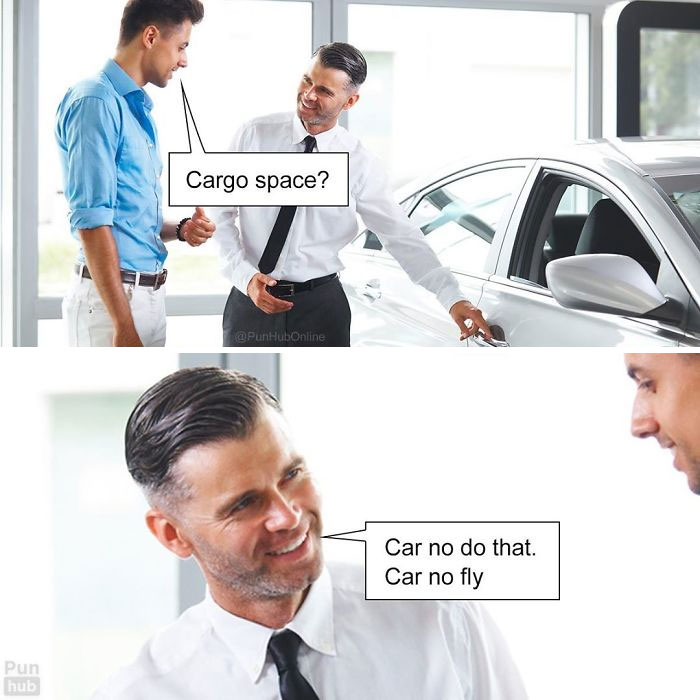
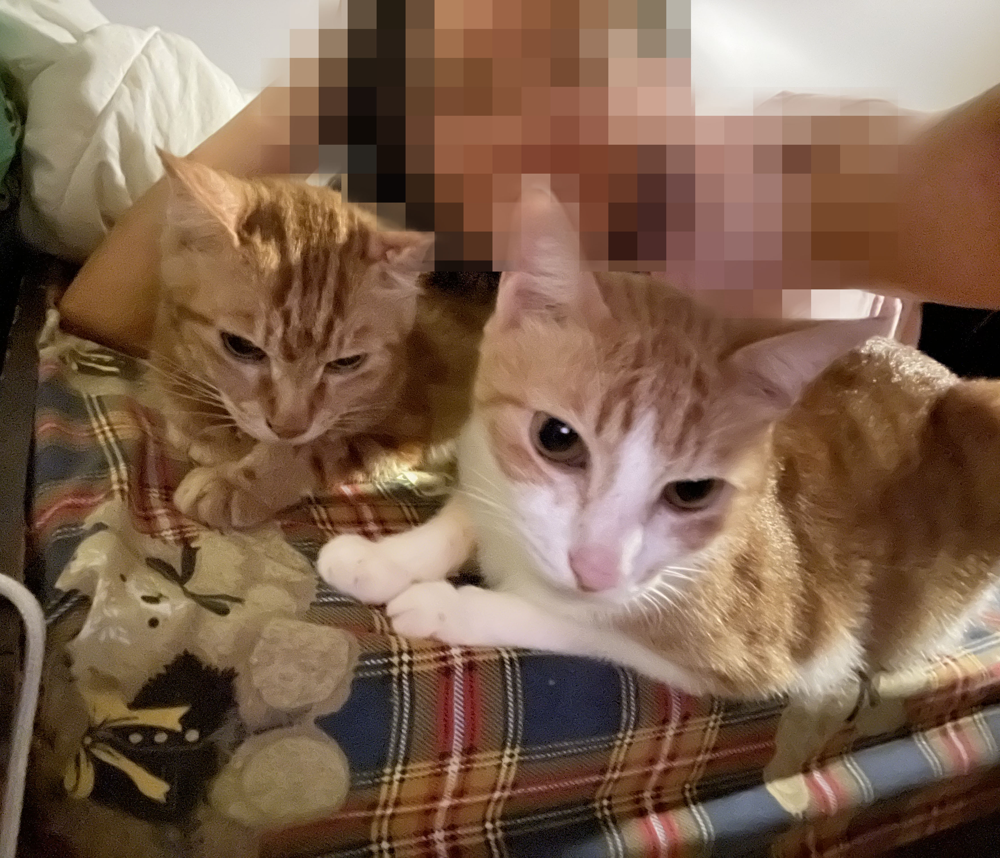
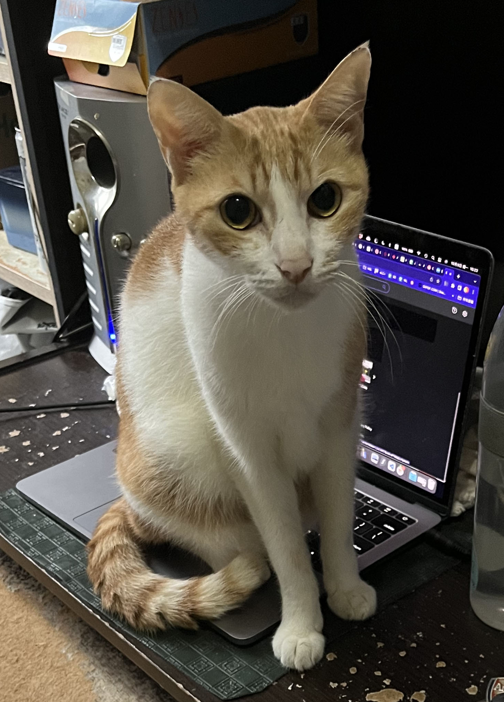

|  |
|  |
|  |
| Credits |
|
Angel is a final year master student of Health Informatics. She is a
dedicated nurse and is passionate about her job. With the emerging
IT in healthcare, such as electronic health record, telemedicine,
virtual realities etc, she believes this program can better prepare
her for future opportunites and challenges.
She chose this course because she heard good feedback from her classmates who like her, do not have much knowledge of computer programming/ web design. Also, she was an avid blogger (Xanga) and Neopets player when she was a teen, which involved a bit of web design. She likes listening to music, watching movies and reading (Reference). She also enjoys weightlifting, swimming and hiking to stay active. Being a proud owner (slave) of 2 cats,  she is interested in topics like animal welfare and veganism. Sustainability, ethics, human rights also interest her. Discussion is welcome and she wishes to be enlightened with different viewpoints and opinions. She considers herself friendly, open-minded and compassionate but sarcastic with a weird sense of humour (as evidenced by this Webpage). Although she has shortcomings such as laziness, not taking things seriously, being too introverted, she is introspective and is eager to learn and improve. P.S this assignment may or may not be done by her cat.  |